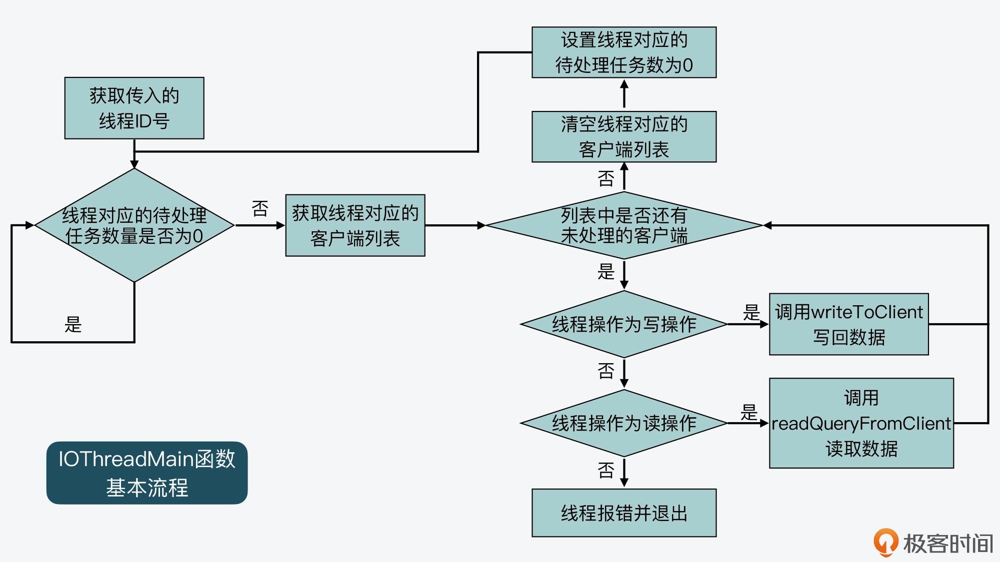
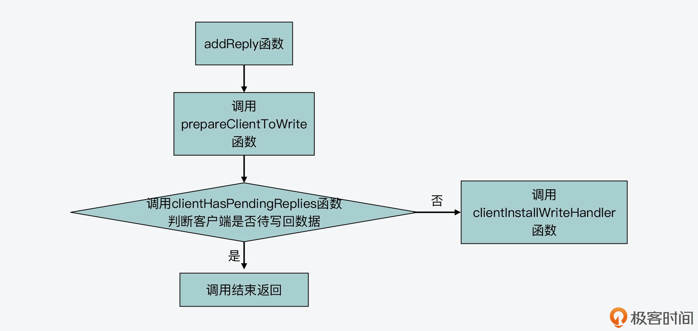
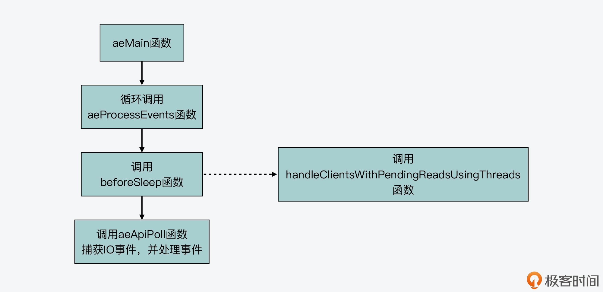
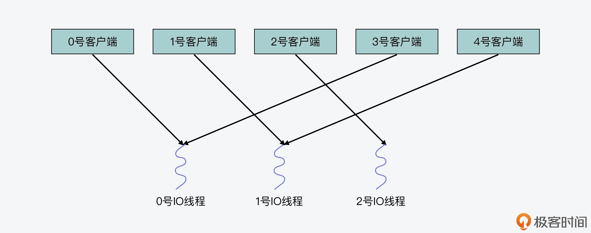
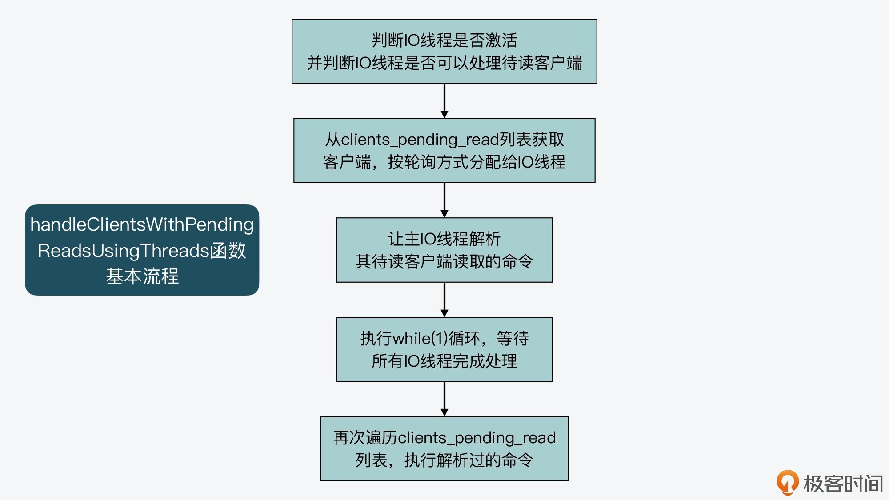

- 00 开篇词 阅读Redis源码能给你带来什么？.md.html
- 01 带你快速攻略Redis源码的整体架构.md.html
- 02 键值对中字符串的实现，用char还是结构体？.md.html
- 03 如何实现一个性能优异的Hash表？.md.html
- 04 内存友好的数据结构该如何细化设计？.md.html
- 05 有序集合为何能同时支持点查询和范围查询？.md.html
- 06 从ziplist到quicklist，再到listpack的启发.md.html
- 07 为什么Stream使用了Radix Tree？.md.html
- 08 Redis server启动后会做哪些操作？.md.html
- 09 Redis事件驱动框架（上）：何时使用select、poll、epoll？.md.html
- 10 Redis事件驱动框架（中）：Redis实现了Reactor模型吗？.md.html
- 11 Redis事件驱动框架（下）：Redis有哪些事件？.md.html
- 12 Redis真的是单线程吗？.md.html
- 13 Redis 6.0多IO线程的效率提高了吗？.md.html
- 14 从代码实现看分布式锁的原子性保证.md.html
- 15 为什么LRU算法原理和代码实现不一样？.md.html
- 16 LFU算法和其他算法相比有优势吗？.md.html
- 17 Lazy Free会影响缓存替换吗？.md.html
- 18 如何生成和解读RDB文件？.md.html
- 19 AOF重写（上）：触发时机与重写的影响.md.html
- 20 AOF重写（下）：重写时的新写操作记录在哪里？.md.html
- 21 主从复制：基于状态机的设计与实现.md.html
- 22 哨兵也和Redis实例一样初始化吗？.md.html
- 23 从哨兵Leader选举学习Raft协议实现（上）.md.html
- 24 从哨兵Leader选举学习Raft协议实现（下）.md.html
- 25 PubSub在主从故障切换时是如何发挥作用的？.md.html
- 26 从Ping-Pong消息学习Gossip协议的实现.md.html
- 27 从MOVED、ASK看集群节点如何处理命令？.md.html
- 28 Redis Cluster数据迁移会阻塞吗？.md.html
- 29 如何正确实现循环缓冲区？.md.html
- 30 如何在系统中实现延迟监控？.md.html
- 31 从Module的实现学习动态扩展功能.md.html
- 32 如何在一个系统中实现单元测试？.md.html
- 结束语 Redis源码阅读，让我们从新开始.md.html
- 捐赠
13 Redis 6.0多IO线程的效率提高了吗？
通过上节课的学习，我们知道 Redis server 启动后的进程会以单线程的方式，执行客户端请求解析和处理工作。但是，Redis server 也会通过 bioInit 函数启动三个后台线程，来处理后台任务。也就是说，Redis 不再让主线程执行一些耗时操作，比如同步写、删除等，而是交给后台线程异步完成，从而避免了对主线程的阻塞。
实际上，在 2020 年 5 月推出的 Redis 6.0 版本中，Redis 在执行模型中还进一步使用了多线程来处理 IO 任务，这样设计的目的，就是为了充分利用当前服务器的多核特性，使用多核运行多线程，让多线程帮助加速数据读取、命令解析以及数据写回的速度，提升 Redis 整体性能。
那么，这些多线程具体是在什么时候启动，又是通过什么方式来处理 IO 请求的呢？
今天这节课，我就来给你介绍下 Redis 6.0 实现的多 IO 线程机制。通过这部分内容的学习，你可以充分了解到 Redis 6.0 是如何通过多线程来提升 IO 请求处理效率的。这样你也就可以结合实际业务来评估，自己是否需要使用 Redis 6.0 了。
好，接下来，我们先来看下多 IO 线程的初始化。注意，因为我们之前课程中阅读的是 Redis 5.0.8 版本的代码，所以在开始学习今天的课程之前，你还需要下载Redis 6.0.15的源码，以便能查看到和多 IO 线程机制相关的代码。
多 IO 线程的初始化
我在上一讲给你介绍过，Redis 5.0 中的三个后台线程，是 server 在初始化过程的最后，调用 InitSeverLast 函数，而 InitServerLast 函数再进一步调用 bioInit 函数来完成的。如果我们在 Redis 6.0 中查看 InitServerLast 函数，会发现和 Redis 5.0 相比，该函数在调完 bioInit 函数后，又调用了 initThreadedIO 函数。而 initThreadedIO 函数正是用来初始化多 IO 线程的，这部分的代码调用如下所示：
void InitServerLast() {
bioInit();
initThreadedIO(); //调用initThreadedIO函数初始化IO线程
set_jemalloc_bg_thread(server.jemalloc_bg_thread);
server.initial_memory_usage = zmalloc_used_memory();
}
所以下面，我们就来看下 initThreadedIO 函数的主要执行流程，这个函数是在networking.c文件中实现的。
首先，initThreadedIO 函数会设置 IO 线程的激活标志。这个激活标志保存在 redisServer 结构体类型的全局变量 server 当中，对应 redisServer 结构体的成员变量 io_threads_active。initThreadedIO 函数会把 io_threads_active 初始化为 0，表示 IO 线程还没有被激活。这部分代码如下所示：
void initThreadedIO(void) {
server.io_threads_active = 0;
…
}
这里，你要注意一下，刚才提到的全局变量 server 是 Redis server 运行时，用来保存各种全局信息的结构体变量。我在【第 8 讲】给你介绍 Redis server 初始化过程的时候，提到过 Redis server 的各种参数初始化配置，都是保存在这个全局变量 server 中的。所以，当你在阅读 Redis 源码时，如果在某个函数中看到变量 server，要知道其实就是这个全局变量。
紧接着，initThreadedIO 函数会对设置的 IO 线程数量进行判断。这个数量就是保存在全局变量 server 的成员变量 io_threads_num 中的。那么在这里，IO 线程的数量判断会有三种结果。
第一种，如果 IO 线程数量为 1，就表示只有 1 个主 IO 线程，initThreadedIO 函数就直接返回了。此时，Redis server 的 IO 线程和 Redis 6.0 之前的版本是相同的。
if (server.io_threads_num == 1) return;
第二种，如果 IO 线程数量大于宏定义 IO_THREADS_MAX_NUM（默认值为 128），那么 initThreadedIO 函数会报错，并退出整个程序。
if (server.io_threads_num > IO_THREADS_MAX_NUM) {
… //报错日志记录
exit(1); //退出程序
}
第三种，如果 IO 线程数量大于 1，并且小于宏定义 IO_THREADS_MAX_NUM，那么，initThreadedIO 函数会执行一个循环流程，该流程的循环次数就是设置的 IO 线程数量。
如此一来，在该循环流程中，initThreadedIO 函数就会给以下四个数组进行初始化操作。
- io_threads_list 数组：保存了每个 IO 线程要处理的客户端，将数组每个元素初始化为一个 List 类型的列表；
- io_threads_pending 数组：保存等待每个 IO 线程处理的客户端个数；
- io_threads_mutex 数组：保存线程互斥锁；
- io_threads 数组：保存每个 IO 线程的描述符。
这四个数组的定义都在 networking.c 文件中，如下所示：
pthread_t io_threads[IO_THREADS_MAX_NUM]; //记录线程描述符的数组
pthread_mutex_t io_threads_mutex[IO_THREADS_MAX_NUM]; //记录线程互斥锁的数组
_Atomic unsigned long io_threads_pending[IO_THREADS_MAX_NUM]; //记录线程待处理的客户端个数
list *io_threads_list[IO_THREADS_MAX_NUM]; //记录线程对应处理的客户端
然后，在对这些数组进行初始化的同时，initThreadedIO 函数还会根据 IO 线程数量，调用 pthread_create 函数创建相应数量的线程。我在上节课给你介绍过，pthread_create 函数的参数包括创建线程要运行的函数和函数参数（*tidp、*attr、*start_routine、*arg）。
所以，对于 initThreadedIO 函数来说，它创建的线程要运行的函数是 IOThreadMain，参数是当前创建线程的编号。不过要注意的是，这个编号是从 1 开始的，编号为 0 的线程其实是运行 Redis server 主流程的主 IO 线程。
以下代码就展示了 initThreadedIO 函数对数组的初始化，以及创建 IO 线程的过程，你可以看下。
for (int i = 0; i < server.io_threads_num; i++) {
io_threads_list[i] = listCreate();
if (i == 0) continue; //编号为0的线程是主IO线程
pthread_t tid;
pthread_mutex_init(&io_threads_mutex[i],NULL); //初始化io_threads_mutex数组
io_threads_pending[i] = 0; //初始化io_threads_pending数组
pthread_mutex_lock(&io_threads_mutex[i]);
//调用pthread_create函数创建IO线程，线程运行函数为IOThreadMain
if (pthread_create(&tid,NULL,IOThreadMain,(void*)(long)i) != 0) {
… //出错处理
}
io_threads[i] = tid; //初始化io_threads数组，设置值为线程标识
}
好了，现在我们再来看下，刚才介绍的 IO 线程启动后要运行的函数 IOThreadMain。了解这个函数，可以帮助我们掌握 IO 线程实际做的工作。
IO 线程的运行函数 IOThreadMain
IOThreadMain 函数也是在 networking.c 文件中定义的，它的主要执行逻辑是一个 while(1) 循环。在这个循环中，IOThreadMain 函数会把 io_threads_list 数组中，每个 IO 线程对应的列表读取出来。
就像我在前面给你介绍的一样，io_threads_list 数组中会针对每个 IO 线程，使用一个列表记录该线程要处理的客户端。所以，IOThreadMain 函数就会从每个 IO 线程对应的列表中，进一步取出要处理的客户端，然后判断线程要执行的操作标记。这个操作标记是用变量 io_threads_op 表示的，它有两种取值。
- io_threads_op 的值为宏定义 IO_THREADS_OP_WRITE：这表明该 IO 线程要做的是写操作，线程会调用 writeToClient 函数将数据写回客户端。
- io_threads_op 的值为宏定义 IO_THREADS_OP_READ：这表明该 IO 线程要做的是读操作，线程会调用 readQueryFromClient 函数从客户端读取数据。
这部分的代码逻辑你可以看看下面的代码。
void *IOThreadMain(void *myid) {
…
while(1) {
listIter li;
listNode *ln;
//获取IO线程要处理的客户端列表
listRewind(io_threads_list[id],&li);
while((ln = listNext(&li))) {
client *c = listNodeValue(ln); //从客户端列表中获取一个客户端
if (io_threads_op == IO_THREADS_OP_WRITE) {
writeToClient(c,0); //如果线程操作是写操作，则调用writeToClient将数据写回客户端
} else if (io_threads_op == IO_THREADS_OP_READ) {
readQueryFromClient(c->conn); //如果线程操作是读操作，则调用readQueryFromClient从客户端读取数据
} else {
serverPanic("io_threads_op value is unknown");
}
}
listEmpty(io_threads_list[id]); //处理完所有客户端后，清空该线程的客户端列表
io_threads_pending[id] = 0; //将该线程的待处理任务数量设置为0
}
}
我也画了下面这张图，展示了 IOThreadMain 函数的基本流程，你可以看下。

好了，到这里你应该就了解了，每一个 IO 线程运行时，都会不断检查是否有等待它处理的客户端。如果有，就根据操作类型，从客户端读取数据或是将数据写回客户端。你可以看到，这些操作都是 Redis 要和客户端完成的 IO 操作，所以，这也是为什么我们把这些线程称为 IO 线程的原因。
那么，你看到这里，可能也会产生一些疑问，IO 线程要处理的客户端是如何添加到 io_threads_list 数组中的呢？
这就要说到 Redis server 对应的全局变量 server 了。server 变量中有两个 List 类型的成员变量：clients_pending_write 和 clients_pending_read，它们分别记录了待写回数据的客户端和待读取数据的客户端，如下所示：
struct redisServer {
...
list *clients_pending_write; //待写回数据的客户端
list *clients_pending_read; //待读取数据的客户端
...
}
你要知道，Redis server 在接收到客户端请求和给客户端返回数据的过程中，会根据一定条件，推迟客户端的读写操作，并分别把待读写的客户端保存到这两个列表中。然后，Redis server 在每次进入事件循环前，会再把列表中的客户端添加到 io_threads_list 数组中，交给 IO 线程进行处理。
所以接下来，我们就先来看下，Redis 是如何推迟客户端的读写操作，并把这些客户端添加到 clients_pending_write 和 clients_pending_read 这两个列表中的。
如何推迟客户端读操作？
Redis server 在和一个客户端建立连接后，就会开始监听这个客户端上的可读事件，而处理可读事件的回调函数是 readQueryFromClient。我在【第 11 讲】中给你介绍了这个过程，你可以再去回顾下。
那么这里，我们再来看下 Redis 6.0 版本中的 readQueryFromClient 函数。这个函数一开始会先从传入参数 conn 中获取客户端 c，紧接着就调用 postponeClientRead 函数，来判断是否推迟从客户端读取数据。这部分的执行逻辑如下所示：
void readQueryFromClient(connection *conn) {
client *c = connGetPrivateData(conn); //从连接数据结构中获取客户
...
if (postponeClientRead(c)) return; //判断是否推迟从客户端读取数据
...
}
现在，我们就来看下 postponeClientRead 函数的执行逻辑。这个函数会根据四个条件判断能否推迟从客户端读取数据。
条件一：全局变量 server 的 io_threads_active 值为 1
这表示多 IO 线程已经激活。我刚才说过，这个变量值在 initThreadedIO 函数中是会被初始化为 0 的，也就是说，多 IO 线程初始化后，默认还没有激活（我一会儿还会给你介绍这个变量值何时被设置为 1）。
条件二：全局变量 server 的 io_threads_do_read 值为 1
这表示多 IO 线程可以用于处理延后执行的客户端读操作。这个变量值是在 Redis 配置文件 redis.conf 中，通过配置项 io-threads-do-reads 设置的，默认值为 no，也就是说，多 IO 线程机制默认并不会用于客户端读操作。所以，如果你想用多 IO 线程处理客户端读操作，就需要把 io-threads-do-reads 配置项设为 yes。
条件三：ProcessingEventsWhileBlocked 变量值为 0
这表示 processEventsWhileBlokced 函数没有在执行。ProcessingEventsWhileBlocked 是一个全局变量，它会在 processEventsWhileBlokced 函数执行时被设置为 1，在 processEventsWhileBlokced 函数执行完成时被设置为 0。
而 processEventsWhileBlokced 函数是在networking.c文件中实现的。当 Redis 在读取 RDB 文件或是 AOF 文件时，这个函数会被调用，用来处理事件驱动框架捕获到的事件。这样就避免了因读取 RDB 或 AOF 文件造成 Redis 阻塞，而无法及时处理事件的情况。所以，当 processEventsWhileBlokced 函数执行处理客户端可读事件时，这些客户端读操作是不会被推迟执行的。
条件四：客户端现有标识不能有 CLIENT_MASTER、CLIENT_SLAVE 和 CLIENT_PENDING_READ
其中，CLIENT_MASTER 和 CLIENT_SLAVE 标识分别表示客户端是用于主从复制的客户端，也就是说，这些客户端不会推迟读操作。CLIENT_PENDING_READ 本身就表示一个客户端已经被设置为推迟读操作了，所以，对于已带有 CLIENT_PENDING_READ 标识的客户端，postponeClientRead 函数就不会再推迟它的读操作了。
总之，只有前面这四个条件都满足了，postponeClientRead 函数才会推迟当前客户端的读操作。具体来说，postponeClientRead 函数会给该客户端设置 CLIENT_PENDING_REA 标识，并调用 listAddNodeHead 函数，把这个客户端添加到全局变量 server 的 clients_pending_read 列表中。
我把 postponeClientRead 函数的代码放在这里，你可以看下。
int postponeClientRead(client *c) {
//判断IO线程是否激活，
if (server.io_threads_active && server.io_threads_do_reads &&
!ProcessingEventsWhileBlocked &&
!(c->flags & (CLIENT_MASTER|CLIENT_SLAVE|CLIENT_PENDING_READ)))
{
c->flags |= CLIENT_PENDING_READ; //给客户端的flag添加CLIENT_PENDING_READ标记，表示推迟该客户端的读操作
listAddNodeHead(server.clients_pending_read,c); //将客户端添加到clients_pending_read列表中
return 1;
} else {
return 0;
}
}
好，现在你已经知道，Redis 是在客户端读事件回调函数 readQueryFromClient 中，通过调用 postponeClientRead 函数来判断和推迟客户端读操作。下面，我再带你来看下 Redis 是如何推迟客户端写操作的。
如何推迟客户端写操作？
Redis 在执行了客户端命令，要给客户端返回结果时，会调用 addReply 函数将待返回结果写入客户端输出缓冲区。
而在 addReply 函数的一开始，该函数会调用 prepareClientToWrite 函数，来判断是否推迟执行客户端写操作。下面代码展示了 addReply 函数对 prepareClientToWrite 函数的调用，你可以看下。
void addReply(client *c, robj *obj) {
if (prepareClientToWrite(c) != C_OK) return;
...
}
所以这里，我们继续来看下 prepareClientToWrite 函数。这个函数会根据客户端设置的标识进行一系列的判断。其中，该函数会调用 clientHasPendingReplies 函数，判断当前客户端是否还有留存在输出缓冲区中的数据等待写回。
如果没有的话，那么，prepareClientToWrite 就会调用 clientInstallWriteHandler 函数，再进一步判断能否推迟该客户端写操作。下面的代码展示了这一调用过程，你可以看下。
int prepareClientToWrite(client *c) {
...
//如果当前客户端没有待写回数据，调用clientInstallWriteHandler函数
if (!clientHasPendingReplies(c)) clientInstallWriteHandler(c);
return C_OK;
}
那么这样一来，我们其实就知道了，能否推迟客户端写操作，最终是由 clientInstallWriteHandler 函数来决定的，这个函数会判断两个条件。
- 条件一：客户端没有设置过 CLIENT_PENDING_WRITE 标识，即没有被推迟过执行写操作。
- 条件二：客户端所在实例没有进行主从复制，或者客户端所在实例是主从复制中的从节点，但全量复制的 RDB 文件已经传输完成，客户端可以接收请求。
一旦这两个条件都满足了，clientInstallWriteHandler 函数就会把客户端标识设置为 CLIENT_PENDING_WRITE，表示推迟该客户端的写操作。同时，clientInstallWriteHandler 函数会把这个客户端添加到全局变量 server 的待写回客户端列表中，也就是 clients_pending_write 列表中。
void clientInstallWriteHandler(client *c) {
//如果客户端没有设置过CLIENT_PENDING_WRITE标识，并且客户端没有在进行主从复制，或者客户端是主从复制中的从节点，已经能接收请求
if (!(c->flags & CLIENT_PENDING_WRITE) &&
(c->replstate == REPL_STATE_NONE ||
(c->replstate == SLAVE_STATE_ONLINE && !c->repl_put_online_on_ack)))
{
//将客户端的标识设置为待写回，即CLIENT_PENDING_WRITE
c->flags |= CLIENT_PENDING_WRITE;
listAddNodeHead(server.clients_pending_write,c); //将可获得加入clients_pending_write列表
}
}
为了便于你更好地理解，我画了一张图，展示了 Redis 推迟客户端写操作的函数调用关系，你可以再回顾下。

不过，当 Redis 使用 clients_pending_read 和 clients_pending_write 两个列表，保存了推迟执行的客户端后，这些客户端又是如何分配给多 IO 线程执行的呢？这就和下面两个函数相关了。
- handleClientsWithPendingReadsUsingThreads 函数：该函数主要负责将 clients_pending_read 列表中的客户端分配给 IO 线程进行处理。
- handleClientsWithPendingWritesUsingThreads 函数：该函数主要负责将 clients_pending_write 列表中的客户端分配给 IO 线程进行处理。
所以接下来，我们就来看下这两个函数的具体操作。
如何把待读客户端分配给 IO 线程执行？
首先，我们来了解 handleClientsWithPendingReadsUsingThreads 函数。这个函数是在 beforeSleep 函数中调用的。
在 Redis 6.0 版本的代码中，事件驱动框架同样是调用 aeMain 函数来执行事件循环流程，该循环流程会调用 aeProcessEvents 函数处理各种事件。而在 aeProcessEvents 函数实际调用 aeApiPoll 函数捕获 IO 事件之前，beforeSleep 函数会被调用。
这个过程如下图所示，你可以看下。

handleClientsWithPendingReadsUsingThreads 函数的主要执行逻辑可以分成四步。
第一步，该函数会先根据全局变量 server 的 io_threads_active 成员变量，判定 IO 线程是否激活，并且根据 server 的 io_threads_do_reads 成员变量，判定用户是否设置了 Redis 可以用 IO 线程处理待读客户端。只有在 IO 线程激活，并且 IO 线程可以用于处理待读客户端时，handleClientsWithPendingReadsUsingThreads 函数才会继续执行，否则该函数就直接结束返回了。这一步的判断逻辑如以下代码所示：
if (!server.io_threads_active || !server.io_threads_do_reads)
return 0;
第二步，handleClientsWithPendingReadsUsingThreads 函数会获取 clients_pending_read 列表的长度，这代表了要处理的待读客户端个数。然后，该函数会从 clients_pending_read 列表中逐一取出待处理的客户端，并用客户端在列表中的序号，对 IO 线程数量进行取模运算。
这样一来，我们就可以根据取模得到的余数，把该客户端分配给对应的 IO 线程进行处理。紧接着，handleClientsWithPendingReadsUsingThreads 函数会调用 listAddNodeTail 函数，把分配好的客户端添加到 io_threads_list 列表的相应元素中。我刚才给你介绍过，io_threads_list 数组的每个元素是一个列表，对应保存了每个 IO 线程要处理的客户端。
为了便于你理解，我来给你举个例子。
假设 IO 线程数量设置为 3，clients_pending_read 列表中一共有 5 个待读客户端，它们在列表中的序号分别是 0，1，2，3 和 4。在这一步中，0 号到 4 号客户端对线程数量 3 取模的结果分别是 0，1，2，0，1，这也对应了即将处理这些客户端的 IO 线程编号。这也就是说，0 号客户端由 0 号线程处理，1 号客户端有 1 号线程处理，以此类推。你可以看到，这个分配方式其实就是把待处理客户端，以轮询方式逐一分配给各个 IO 线程。
我画了下面这张图，展示了这个分配结果，你可以再看下。

以下代码展示的就是以轮询方式将客户端分配给 IO 线程的执行逻辑：
int processed = listLength(server.clients_pending_read);
listRewind(server.clients_pending_read,&li);
int item_id = 0;
while((ln = listNext(&li))) {
client *c = listNodeValue(ln);
int target_id = item_id % server.io_threads_num;
listAddNodeTail(io_threads_list[target_id],c);
item_id++;
}
这样，当 handleClientsWithPendingReadsUsingThreads 函数完成客户端的 IO 线程分配之后，它会将 IO 线程的操作标识设置为读操作，也就是 IO_THREADS_OP_READ。然后，它会遍历 io_threads_list 数组中的每个元素列表长度，等待每个线程处理的客户端数量，赋值给 io_threads_pending 数组。这一过程如下所示：
io_threads_op = IO_THREADS_OP_READ;
for (int j = 1; j < server.io_threads_num; j++) {
int count = listLength(io_threads_list[j]);
io_threads_pending[j] = count;
}
第三步，handleClientsWithPendingReadsUsingThreads 函数会将 io_threads_list 数组 0 号列表（也就是 io_threads_list[0]元素）中的待读客户端逐一取出来，并调用 readQueryFromClient 函数进行处理。
其实，handleClientsWithPendingReadsUsingThreads 函数本身就是由 IO 主线程执行的，而 io_threads_list 数组对应的 0 号线程正是 IO 主线程，所以，这里就是让主 IO 线程来处理它的待读客户端。
listRewind(io_threads_list[0],&li); //获取0号列表中的所有客户端
while((ln = listNext(&li))) {
client *c = listNodeValue(ln);
readQueryFromClient(c->conn);
}
listEmpty(io_threads_list[0]); //处理完后，清空0号列表
紧接着，handleClientsWithPendingReadsUsingThreads 函数会执行一个 while(1) 循环，等待所有 IO 线程完成待读客户端的处理，如下所示：
while(1) {
unsigned long pending = 0;
for (int j = 1; j < server.io_threads_num; j++)
pending += io_threads_pending[j];
if (pending == 0) break;
}
第四步，handleClientsWithPendingReadsUsingThreads 函数会再次遍历一遍 clients_pending_read 列表，依次取出其中的客户端。紧接着，它会判断客户端的标识中是否有 CLIENT_PENDING_COMMAND。如果有 CLIENT_PENDING_COMMAND 标识，表明该客户端中的命令已经被某一个 IO 线程解析过，已经可以被执行了。
此时，handleClientsWithPendingReadsUsingThreads 函数会调用 processCommandAndResetClient 函数执行命令。最后，它会直接调用 processInputBuffer 函数解析客户端中所有命令并执行。
这部分的代码逻辑如下所示，你可以看下。
while(listLength(server.clients_pending_read)) {
ln = listFirst(server.clients_pending_read);
client *c = listNodeValue(ln);
...
//如果命令已经解析过，则执行该命令
if (c->flags & CLIENT_PENDING_COMMAND) {
c->flags &= ~CLIENT_PENDING_COMMAND;
if (processCommandAndResetClient(c) == C_ERR) {
continue;
}
}
//解析并执行所有命令
processInputBuffer(c);
}
好了，到这里，你就了解了 clients_pending_read 列表中的待读客户端，是如何经过以上四个步骤来分配给 IO 线程进行处理的。下图展示了这个主要过程，你可以再回顾下。

那么，接下来，我们再来看下待写客户端的分配和处理。
如何把待写客户端分配给 IO 线程执行？
和待读客户端的分配处理类似，待写客户端分配处理是由 handleClientsWithPendingWritesUsingThreads 函数来完成的。该函数也是在 beforeSleep 函数中被调用的。
handleClientsWithPendingWritesUsingThreads 函数的主要流程同样也可以分成 4 步，其中，第 2、3 和 4 步的执行逻辑，和 handleClientsWithPendingReadsUsingThreads 函数类似。
简单来说，在第 2 步，handleClientsWithPendingWritesUsingThreads 函数会把待写客户端，按照轮询方式分配给 IO 线程，添加到 io_threads_list 数组各元素中。
然后，在第 3 步，handleClientsWithPendingWritesUsingThreads 函数会让主 IO 线程处理其待写客户端，并执行 while(1) 循环等待所有 IO 线程完成处理。
在第 4 步，handleClientsWithPendingWritesUsingThreads 函数会再次检查 clients_pending_write 列表中，是否还有待写的客户端。如果有的话，并且这些客户端还有留存在缓冲区中的数据，那么，handleClientsWithPendingWritesUsingThreads 函数就会调用 connSetWriteHandler 函数注册可写事件，而这个可写事件对应的回调函数是 sendReplyToClient 函数。
等到事件循环流程再次执行时，刚才 handleClientsWithPendingWritesUsingThreads 函数注册的可写事件就会被处理，紧接着 sendReplyToClient 函数会执行，它会直接调用 writeToClient 函数，把客户端缓冲区中的数据写回。
这里，你需要注意的是，connSetWriteHandler 函数最终会映射为 connSocketSetWriteHandler 函数，而 connSocketSetWriteHandler 函数是在connection.c文件中实现的。connSocketSetWriteHandler 函数会调用 aeCreateFileEvent 函数创建 AE_WRITABLE 事件，这就是刚才介绍的可写事件的注册（关于 aeCreateFileEvent 函数的使用，你也可以再回顾下第 11 讲）。
不过，和 handleClientsWithPendingReadsUsingThreads 函数不同的是在第 1 步，handleClientsWithPendingWritesUsingThreads 函数，会判断 IO 线程数量是否为 1，或者待写客户端数量是否小于 IO 线程数量的 2 倍。
如果这两个条件中有一个条件成立，那么 handleClientsWithPendingWritesUsingThreads 函数就不会用多线程来处理客户端了，而是会调用 handleClientsWithPendingWrites 函数由主 IO 线程直接处理待写客户端。这样做的目的，主要是为了在待写客户端数量不多时，避免采用多线程，从而节省 CPU 开销。
这一步的条件判断逻辑如下所示。其中，stopThreadedIOIfNeeded 函数主要是用来判断待写客户端数量，是否不足为 IO 线程数量的 2 倍。
if (server.io_threads_num == 1 || stopThreadedIOIfNeeded()) {
return handleClientsWithPendingWrites();
}
另外，handleClientsWithPendingWritesUsingThreads 函数在第 1 步中，还会判断 IO 线程是否已激活。如果没有激活，它就会调用 startThreadedIO 函数，把全局变量 server 的 io_threads_active 成员变量值设置为 1，表示 IO 线程已激活。这步判断操作如下所示：
if (!server.io_threads_active) startThreadedIO();
总之你要知道的就是，Redis 是通过 handleClientsWithPendingWritesUsingThreads 函数，把待写客户端按轮询方式分配给各个 IO 线程，并由它们来负责写回数据的。
小结
今天这节课，我给你介绍了 Redis 6.0 中新设计实现的多 IO 线程机制。这个机制的设计主要是为了使用多个 IO 线程，来并发处理客户端读取数据、解析命令和写回数据。使用了多线程后，Redis 就可以充分利用服务器的多核特性，从而提高 IO 效率。
总结来说，Redis 6.0 先是在初始化过程中，根据用户设置的 IO 线程数量，创建对应数量的 IO 线程。
当 Redis server 初始化完成后正常运行时，它会在 readQueryFromClient 函数中通过调用 postponeClientRead 函数来决定是否推迟客户端读操作。同时，Redis server 会在 addReply 函数中通过调用 prepareClientToWrite 函数，来决定是否推迟客户端写操作。而待读写的客户端会被分别加入到 clients_pending_read 和 clients_pending_write 两个列表中。
这样，每当 Redis server 要进入事件循环流程前，都会在 beforeSleep 函数中分别调用 handleClientsWithPendingReadsUsingThreads 函数和 handleClientsWithPendingWritesUsingThreads 函数，将待读写客户端以轮询方式分配给 IO 线程，加入到 IO 线程的待处理客户端列表 io_threads_list 中。
而 IO 线程一旦运行后，本身会一直检测 io_threads_list 中的客户端，如果有待读写客户端，IO 线程就会调用 readQueryFromClient 或 writeToClient 函数来进行处理。
最后，我也想再提醒你一下，多 IO 线程本身并不会执行命令，它们只是利用多核并行地读取数据和解析命令，或是将 server 数据写回（下节课我还会结合分布式锁的原子性保证，来给你介绍这一部分的源码实现。）。所以，Redis 执行命令的线程还是主 IO 线程。这一点对于你理解多 IO 线程机制很重要，可以避免你误解 Redis 有多线程同时执行命令。
这样一来，我们原来针对 Redis 单个主 IO 线程做的优化仍然有效，比如避免 bigkey、避免阻塞操作等。
每课一问
Redis 多 IO 线程机制使用 startThreadedIO 函数和 stopThreadedIO 函数，来设置 IO 线程激活标识 io_threads_active 为 1 和为 0。此处，这两个函数还会对线程互斥锁数组进行解锁和加锁操作，如下所示。你知道为什么这两个函数要执行解锁和加锁操作么？
void startThreadedIO(void) {
...
for (int j = 1; j < server.io_threads_num; j++)
pthread_mutex_unlock(&io_threads_mutex[j]); //给互斥锁数组中每个线程对应的互斥锁做解锁操作
server.io_threads_active = 1;
}
void stopThreadedIO(void) {
...
for (int j = 1; j < server.io_threads_num; j++)
pthread_mutex_lock(&io_threads_mutex[j]); //给互斥锁数组中每个线程对应的互斥锁做加锁操作
server.io_threads_active = 0;
}
欢迎在留言区分享你的答案和思考过程，如果觉得有收获，也欢迎你把今天的内容分享给更多的朋友。
© 2019 - 2023 Liangliang Lee. Powered by gin and hexo-theme-book.